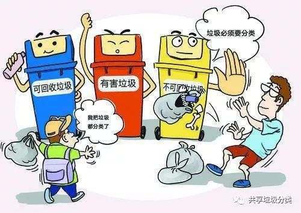
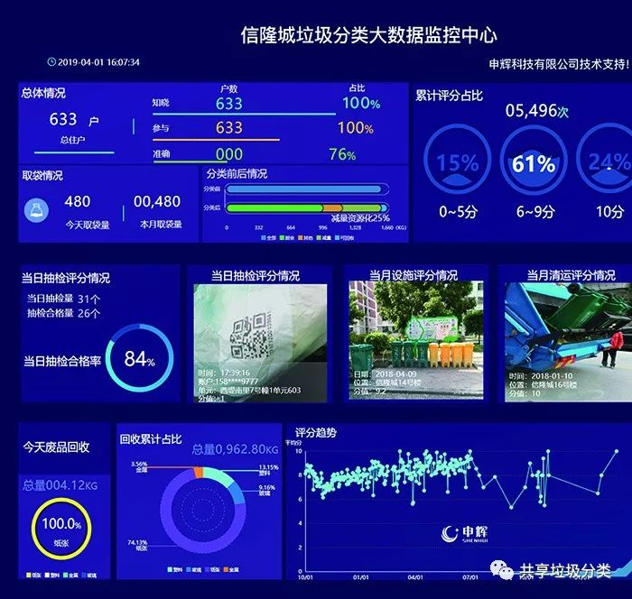
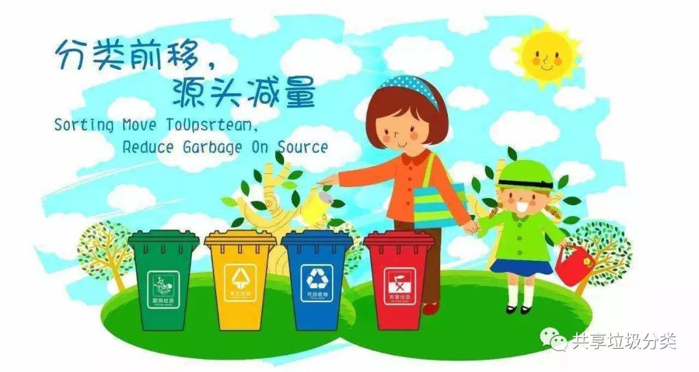

北京东城垃圾分类年底前实现全区域全流程实时监管
来源：北京东城
人民网北京8月15日电，17个街道建成垃圾排放登记系统，建立完善的垃圾分类投放、收集和运输体系，构建“互联网+垃圾分类”模式……8月14日上午，东城区召开的全区垃圾分类工作动员部署大会发布：年底前，东城区将实现垃圾分类全区域、全流程实时监管。
记者从东城区城管委了解到，今年，东城区已在全市率先实现垃圾分类示范片区创建全覆盖，787家党政机关、2737家餐饮企业纳入餐厨垃圾规范管理。今年上半年，全区生活垃圾总量同比减量2万吨。“目前崇外、建国门和龙潭3个街道建成垃圾分类排放登记系统。”区城管委相关负责人表示，今年年底该系统将覆盖全区17个街道。
除了垃圾分类排放系统，年底前东城区还将建立完善的垃圾分类投放、收集和运输体系，通过在垃圾收集容器上加装身份标识、在密闭式清洁站及运输车辆加装称重计量设备，构建“互联网+垃圾分类”模式，实现对各类垃圾的投放、收集和运输的全流程实时监管，为垃圾分类提供技术支撑、数据支撑和管理支撑。同时建立区级平台，实现区、街、社区数据互联互通，对参与率、分出率作出科学准确的评价，进一步提高垃圾分类精细化、信息化管理水平。
目前，东城区已完成9大类111项6893个责任主体基础信息普查，绘制分类设施点位图、车辆收运路线图。95辆前端分类电动收运车在片区内循环收运，每个街道设立1-2个厨余（餐厨）垃圾收集转运点，与市环卫集团39辆纯电动厨余（餐厨）垃圾运输车辆对接，实现全流程闭环运输处理，生活垃圾无害化处理率保持在100%。
东花市街道以“申辉”APP，积极开展线上厨余垃圾打卡兑换生活用品活动；建国门街道首创“物质—文明”双积分制度，除物质积分和现金回馈之外，还累计文明积分，将积分与便民商业网点、胡同停车管理等优惠挂钩；崇外街道推出厨余垃圾分类和再生资源回收相结合的“两网融合”工作模式，居民通过APP在线预约或者电话预约的模式，垃圾分类服务公司30分钟内上门回收。
“垃圾分类习惯的养成是一个长期的过程。接下来，我们要着眼于提高居民对垃圾分类的深度知晓率和参与率，引导群众准确掌握垃圾分类‘四分法’内容和方法，根本上推动垃圾分类从‘有形覆盖’到‘有效覆盖’转变。”东城区城管委相关负责人介绍，目前，东城区正在积极推动“党建+垃圾分类”，借助党员“双报到”活动，调动区域内机关、企事业单位、各类组织的积极性，共同参与垃圾分类工作。充分发动街巷长、小巷管家、楼门长、志愿者等参与垃圾分类入户宣传。健全垃圾分类志愿者队伍，居委会、物业公司动员居民践行文明公约，让居民自治在垃圾分类工作中不断发挥积极作用。
目前，东城区组建了区、街两级垃圾分类工作领导小组，党政一把手任组长，各部门、单位及社区为成员，统筹开展垃圾分类工作，积极争创垃圾分类示范片区。“今年年底，还将实现党政机关、企事业单位强制分类达到100%。”东城区城管委负责人表示。
【共享垃圾分类】
响应国家号召，倡导垃圾分类，
推行共享垃圾分类观点，
领先技术，开放平台。
共创、共享、共赢。